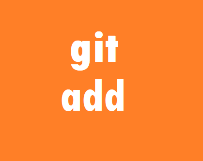
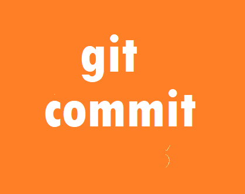
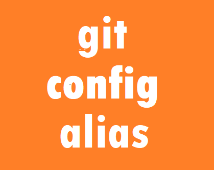
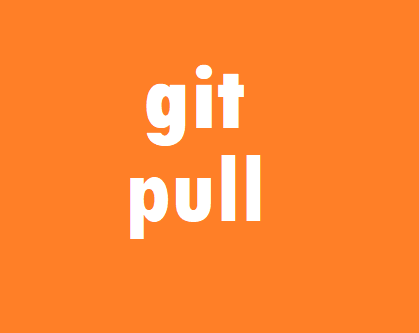
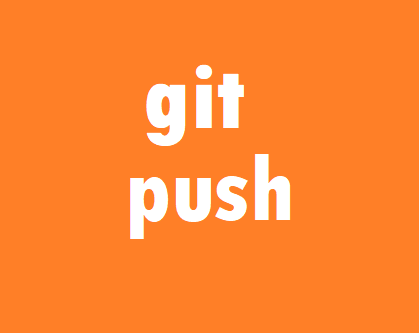
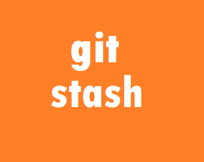

O Git desempenhou um papel fundamental na ascensão do movimento de código aberto. Ele permitiu que desenvolvedores de todo o mundo colaborassem em projetos de código aberto de maneira eficiente, levando a avanços significativos na tecnologia. Com seu sistema de controle de versão, é possível rastrear todas as mudanças feitas no código, identificar erros e vulnerabilidades, e corrigi-los rapidamente. Isso contribui para a integridade e a confiabilidade do software. Role a tela para saber mais sobre o git.
O Working Directory, também conhecido como a árvore de trabalho, é o diretório local onde todos os arquivos do repositório Git são armazenados e manipulados. Quando você edita, modifica ou deleta arquivos, essas alterações ocorrem dentro deste diretório. Ele representa o estado atual do seu projeto e serve como a camada visível para os usuários, mostrando as mudanças feitas nos arquivos. Todas as operações realizadas no Working Directory são refletidas no Git, permitindo que você acompanhe as modificações antes de consolidá-las em um commit.
A Staging Area, também conhecida como Index, é uma etapa crucial no fluxo de trabalho do Git. Nesta fase, as alterações feitas nos arquivos são preparadas meticulosamente antes de serem incorporadas ao repositório principal. Este ambiente permite uma revisão e organização das mudanças, fornecendo um controle granular sobre quais alterações serão incluídas no próximo commit.
O Git Directory, também conhecido como repositório, é onde estão as informações do projeto armazenadas de forma permanente. Esta é a parte na qual o histórico das alterações, branches e metadados são mantidos. Diferentemente do Working Directory e da Staging Area, o Git Directory não contém apenas as versões mais recentes dos arquivos, mas sim o histórico completo e todas as versões anteriores.
Segue abaixo uma lista com alguns comandos práticos e podem facilitar a produtividade:
O git add é usado para enviar arquivos para a staging area. Na frente do código coloca-se o nome do arquivo que será movido, mas também é possível usar a notação "git add ." para que todos os arquivos na pasta sejam selecionados de uma vez.
O git commit recebe as informações da staging area criando uma "snapshot" do estado atual do repositório ou seja é o que permite propriamente salvar um projeto no git. A opção -am "mensagem a ser adicionada" faz um commit direto do diretório que se está trabalhando para o diretorio git sem uma etapa intermediária e portando não requer a precedência de um git add.
O git config alias é uma configuração que permite dar nomes para comandos específicos. Por exemplo, experimente digitar: git config alias.ad "commit -am". O comando anterior cria um novo termo "git ad" que quando digitado roda o código "git commit -am", dessa forma é possível encurtar ainda mais os códigos. Adicionando um --global antes do alias faz com que as abreviações criadas sejam válidas em qualquer repositório git criado na máquina.
git pull: puxa os arquivos de um repositório para o repositório iniciado na máquina. Deve ser seguido pela url de onde se está recebendo os arquivos e o nome da branch aonde eles serão inseridos. Esse comando automaticamente mescla as alterações no caso se houverem commits diferentes ele tenta uni-los, se adiconarmos a opção --rebase ao invés de mesclar ele aplica as mudanaçs do pull no início e as criadas na branch no final.
O comando git push envia os commits para a o endereço de um repositório git que deve ser especificado, seguido de qual branch deve ser upada. Não é possível usar esse comando caso o repositório local esteja atrás dos commits do github, a não ser que seja usada a opção --force depois do push, nesse caso os commits do repositório remoto são apagados e substituidos pelos do local.
Para mudanças que ainda não foram concluidas e estão confusas de mais para entrar em um commit é possível usar git stash save nome_do_stash para guardá-las e mais para frente usar git stash list para ver qual o número em que a mundaça está salva e finalmente git stash apply numero_na_lista para restaurar àquele estado